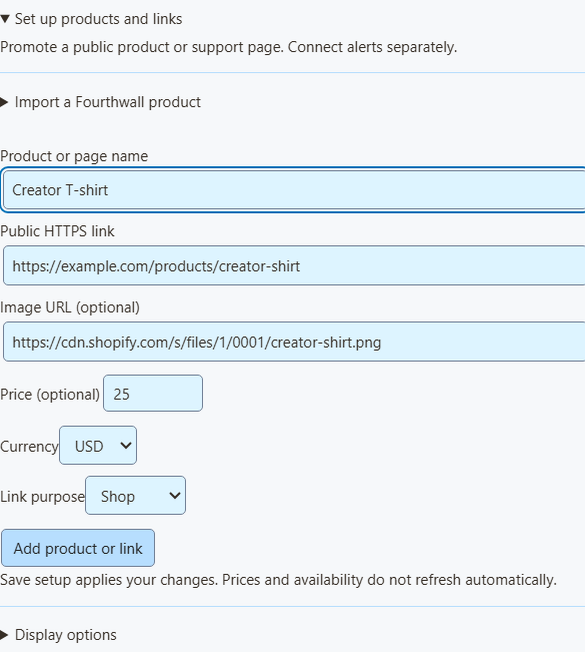

Social Stream Ninja 中的 Shopify
透過圖片、價格、易讀連結與 QR 碼推廣公開商品。接收經過簽署的已付款訂單通知，作為 購買 提醒，顯示在活動摘要、多類型提醒與 Event Flow 中。商品推廣獨立於付款提醒運作。
連接購買 · 匯入商品 · OBS 疊加畫面 · 安全測試 · 限制與疑難排解
可用性： 自動提醒要求在 SSN API 上部署並啟用 Shopify 接收器。如果接收器無法使用，儲存設定會回報錯誤，且不會啟用 Shopify。公開商品匯入與手動推廣可獨立運作。本指南描述的是整合程式碼；在聲稱線上服務已驗證之前，仍需真實商家測試。
連接已付款購買
- 在 Shopify 中，開啟 設定 → 通知 → Webhooks。找到為手動建立 Webhook 顯示的簽署密鑰。這與 Storefront 權杖不同。
- 在 SSN 中開啟 營利 → Shopify 購買 → 設定。輸入永久的
your-store.myshopify.com網域與 Webhook 簽署密鑰。啟用 Shopify 購買，然後點按 儲存設定. - 點選 複製接收器 URL。在 Shopify 中建立 Webhook，事件選擇 訂單付款，格式為 JSON及該接收器 URL。選擇受支援的穩定 Webhook API 版本；此整合依據 2026-07 訂單契約開發。
- 儲存 Shopify Webhook。保持 SSN 執行以處理購買。接收器會先驗證原始請求本文 HMAC 與相符的商店，再接受訂單資料。

簽署密鑰在 SSN 接收器上加密，儲存後從輸入欄位清除。獨立的私人讀取金鑰保留在此裝置上。兩者都不會包含在 OBS 連結或觀眾 QR 碼中。Shopify 使用專用接收器；無需開啟舊版遠端 API 控制開關。
產生 URL 表示設定已儲存，不代表 Shopify 已傳遞任何內容。狀態會區分等待、已驗證測試、已略過事件與已收到購買。更換商店前需先中斷連線。關閉 Shopify 會暫停本機處理；中斷連線會刪除其接收器與排隊事件。中斷連線時，請移除對應的 Shopify Webhook。
匯入公開商品
- 輸入您的
myshopify.com網域，填入 Shopify 設定。匯入商品無需啟用購買提醒或輸入簽署密鑰。 - 展開 匯入商品，貼上公開商品 URL，並點按 載入商品詳細資料.
- 如果無需權杖的存取無法取得商品，請提供 公開 Storefront 權杖。Shopify 的 Headless 管道可以建立權杖。將商品發布至該店面與網路商店。不要貼上 Admin API 權杖或私人 Storefront 權杖。
- SSN 開啟現有的 商品與支持連結 編輯器，其中包含 Shopify 傳回的標題、圖片、價格與標準公開連結。檢查這些內容，然後點按 新增商品或連結，啟用目錄並 儲存設定.

匯入透過 Storefront API 每次讀取一個商品。權杖為選用，僅用於該次請求，隨後清除。Shopify 的標準網路商店 URL 將作為公開連結，包括 Shopify 傳回的自訂網域。無法使用的商品以及沒有公開網路商店連結的商品會被排除。
只有商品各款式最低價與最高價相同時，才會填入價格。否則留空；只有能準確描述商品時，才自行選擇具體價格。匯入資訊是快照，不會持續同步庫存或價格。商店變更時請檢查。您也可以隨時改用手動商品輸入。
使用現有疊加畫面
位於 疊加畫面連結：，選擇 商品與支持連結。使用 僅商品展示 顯示圖片、價格與 QR 碼， 僅支持卡片 顯示小型常駐或定期商店連結，或使用 僅活動提醒 顯示購買。將每個需要的 OBS 連結複製至獨立瀏覽器來源，初始尺寸為 800 × 600。
將選用的提醒來源篩選器設為 shopify 使通用營利疊加畫面僅顯示 Shopify 活動。為該通用檢視啟用商品與支持連結。現有多類型提醒與活動摘要會獨立於商品目錄接收 Shopify 購買。

商品卡片連結至公開商品頁面。使用 複製公開連結 在聊天中分享可點按位址，並用手機依最終直播畫面尺寸測試 QR 碼。購買提醒不會借用無關輪播商品的 QR 碼或圖片。訂單 Webhook 不提供可靠的商品圖片 URL，因此購買提醒使用文字；匯入的推廣卡片可以顯示圖片。
在 Event Flow 中，將事件類型選為 purchase 並將來源／類型篩選為 shopify。比較 meta.commerce.orderTotal 設定訂單金額規則，並檢查 meta.commerce.currency ，然後再比較金額。這些是購買：不會發出 hasDonation 或 donoValue ，贊助目標也不會增加。標為禮物的推廣卡片不會改變訂單事件的分類。寄送給其他人並不能證明是送給創作者的禮物。
安全預覽與測試
預覽範例 開啟不連接工作階段的隔離範例疊加畫面。它不會觸發 Event Flow、變更總額或驗證付款。
明確標記為下列狀態的 Shopify 訂單： test: true 會被確認接收，並在接收器狀態中顯示為測試，不產生購買提醒或操作。缺少測試旗標、未付款／部分付款訂單、已取消訂單、總額為零以及過舊或無效時間戳記也會被略過。端對端測試請使用開發商店。缺少可信測試旗標的管理員範例不應傳送至正在執行的獎勵流程中；檢查外觀時，SSN 預覽才是安全方式。
未使用商店時我們檢查的內容
隔離測試涵蓋透過真實 SSApp 執行階段進行的實際 HTTP 傳遞，包括簽署 Unicode JSON、竄改簽章、重複傳遞、測試訂單隔離、幣別精度、過大請求、移除私人客戶資料與離線復原。這些檢查不會下單，也不需要商家帳號。
正式環境的 Shopify 接收器仍處於停用狀態，等待真實商店傳遞測試。手動商品推廣可以獨立使用。Shopify CLI 範例 Webhook 有助於測試承載資料處理，但不能驗證訂閱或重試，且仍需要應用程式憑證。參閱 Shopify CLI Webhook 測試限制.
傳遞限制與疑難排解
- 接收器無法使用： SSN API 操作員必須部署並啟用 Shopify 接收器。不要使用舊的未簽名會話 Webhook URL 作為替代。
- 等待事件： 核對訂單付款、JSON、準確的接收器 URL、相符的永久商店網域以及該 Webhook 的簽署密鑰。自訂應用程式的 Webhook 使用該應用程式的簽署密鑰，不是手動通知密鑰。
- 已簽署事件被略過： 此整合要求總額為正且已全額付款的訂單，
test: false以及經過簽署的請求本文updated_at在過去七天內（允許時鐘最多提前五分鐘）。它不會根據訂單建立、履約或庫存來推斷付款。 - SSN 曾處於離線狀態： 已接受事件最多排隊儲存七天。重新啟動 SSN 可繼續處理。接收器重新啟動後，狀態與待處理工作仍會保留。服務的儲存容量有限，無法持久儲存排隊工作時，會要求 Shopify 重試。
- 重複內容： 接收器依商店／訂單去重，即使 Shopify 傳遞 ID 不同也是如此。去重紀錄儲存七天。SSN 在確認前持久儲存已處理 ID。外部操作執行後、儲存前發生當機，仍可能導致操作重複；對有實質影響的自動化，請使用自己的冪等保護。
- 缺少買家姓名： 這是有意設計的。SSN 排除客戶姓名、電子郵件、地址、訂單備註、訂單項目自訂屬性、結帳 URL 與原始訂單 ID。公開商品標題保持為純文字。
- 退款或訂單變更： 這是即時提醒流，不是會計或履約系統。退款、取消與修改總額不會撤銷先前提醒。不包含訂單歷史對帳或自動移除商品功能。
請參閱 Shopify 事件契約 和 共用商品與 QR 碼指南.